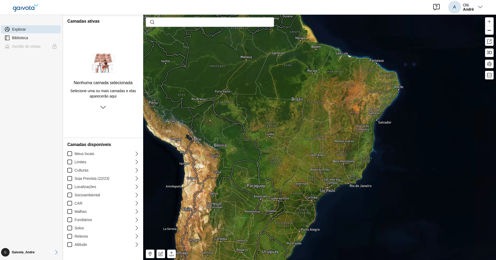
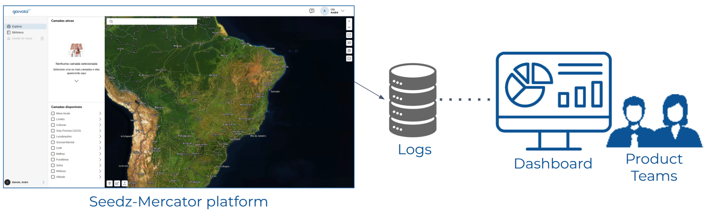
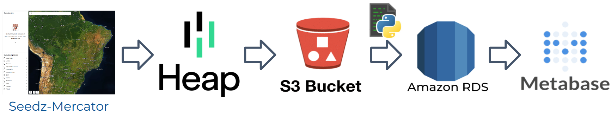
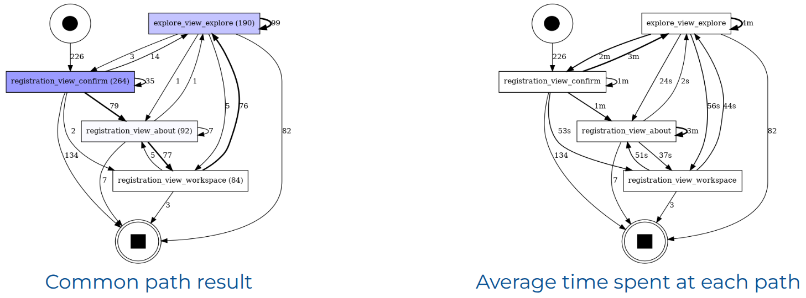

User Interaction Analysis
Supporting Product Managers and Designers in their decision-making
Overview
(S)ituation: The company aimed to elevate user interaction on its Seedz-Mercator platform.
(T)ask: Our goal was to implement a comprehensive solution to track user interaction, identify patterns, and provide actionable insights for the product teams.
(A)ction: To achieve this, we implemented a robust AWS-based data pipeline for storing and processing logs, through statistical and process mining methods to identify user interaction patterns. This pipeline is run daily to deliver dashboards enabling data-driven decisions by product teams.
(R)esult: As a result, we elucidated user event flows, pinpointed bottlenecks, identified underutilized pages, and clustered users based on their behavioral patterns. We also established a foundation for effective A/B testing. These initiatives significantly enhanced the user experience and contributed to improved user retention on the platform.
Full Report
As the Data Science Manager at Gaivota (2022) and a Software Engineering Manager at Seedz (2023), I led a high-impact project to analyze user interactions within Seedz-Mercator, illustrated in Figure 1, which is a platform to manage agribusiness data such as compliance analysis, crop identification, land cover, and property valuation. The company wanted to understand the user interactions on the platform to enhance the user experience, and identify the most visited pages, components, user preferences and behaviors.
 Figure 1: Seedz-Mercator map viewer interface.
My experience in dashboards and data visualization has been a significant asset in this project. In my Ph.D. research, I developed a model for building dashboards to help instructors analyze student logs from Virtual Learning Environments, as illustrated Figure 2. And this research has a strong connection with the challenges faced by the company. So, I used this model adapting for our needs. Our process consisted of:
- Interviewing the Product Teams to understand their needs and visualization preferences
- Defining a data pipeline to handle the data
- Building visualizations to allow Product Teams assemble dashboards
- Presenting relevant findings about user preferences and behavior
 Figure 2: A model for building dashboards. Source: https://doi.org/10.17771/PUCRio.acad.50335.
Figure 2: A model for building dashboards. Source: https://doi.org/10.17771/PUCRio.acad.50335.
Our initial step in this project involved interviews with Project Managers, Designers, and Product Owners to understand their needs and visualization preferences. And we documented all the gathered requirements as research questions, such as "Which layers in the map are the most selected by the users?"; "What is the typical user path from sign-in to log-out?". Figure 3 presents our goal of providing a solution to track user interactions, identify patterns, and present a dashboard with insights for the product teams.
 Figure 3: Schema to track user interactions, identify patterns, and present a dashboard with actionable insights for the product teams.
Next, we integrated with Heap Analytics, a third-party tool to capture user activity and manage logs, which allow us define interactions to track through tags. We established a comprehensive set of tags to map relevant events, including pageviews, clicks on elements, and interactions with hover buttons. Using AWS services such as S3, Lambda and RDS, we built a scalable data pipeline to ingest, clean, and structure this data for analysis and visualization through the Metabase. These visualizations, developed in collaboration with product managers and designers, provided critical insights into user access patterns and engagement metrics. Figure 4 illustrates the data pipeline we developed to support this process.
 Figure 4: Data pipeline architecture designed to extract, transform, load, and visualize user interaction data, enabling actionable insights for product teams.
To further understand user behavior, I applied process mining techniques to map user journeys, uncover bottlenecks, and measure time spent on key flows. This analysis revealed unexpected navigation patterns and highlighted underperforming pages, informing product strategy. Additionally, I led the clustering of users based on behavior, which enabled the design of targeted initiatives and user outreach.
 Figure 5: Petri Net representation of the user sign-up journey. Nodes represent page view events, while edges in the left graph indicate the number of users transitioning between events. Edges in the right graph present the average time spent between page view events. Note: Values shown are illustrative and not actual data.
One key outcome was the initiation of structured user interviews with representatives from each behavioral cluster. These sessions provided valuable context on user goals and friction points, guiding the refinement of both product features and content.
Our work also laid the groundwork for effective A/B testing by product and design teams. With a reliable tracking and analysis infrastructure in place, we could evaluate the impact of interface and content changes on user engagement and satisfaction. I’m proud of the tangible results of this project, which significantly improved the user experience, boosted retention, and drove meaningful business growth through data-informed decisions.